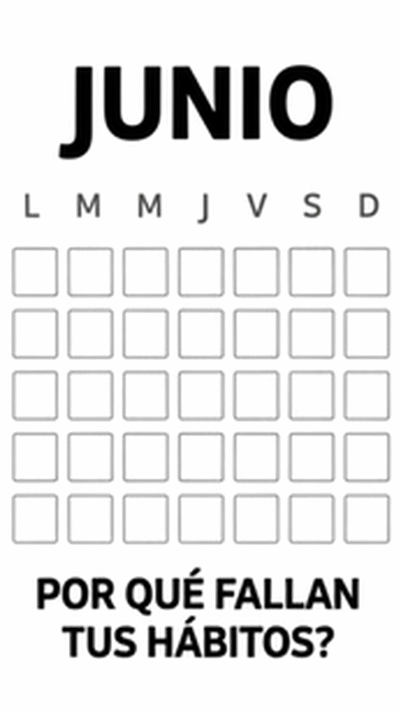

La mayoría de propósitos no fracasan por falta de motivación, sino porque se diseñan de forma poco realista desde el primer día: demasiado grandes, demasiado exigentes, sin plan para los días malos.

Empieza más pequeño de lo que crees necesario
Si el objetivo es hacer ejercicio, un compromiso de diez minutos tiene muchas más probabilidades de sostenerse en el tiempo que uno de una hora. Una vez que el hábito está instalado, ampliarlo es fácil; lo difícil es sostener algo que desde el principio pide demasiado. La higiene del sueño es un buen ejemplo: funciona mejor a base de ajustes pequeños y constantes que con cambios drásticos de un día para otro.
Ata el hábito nuevo a uno que ya existe
Es más fácil recordar y mantener un hábito cuando se engancha a una rutina que ya haces todos los días: "después de servir el café, estiro dos minutos" funciona mejor que un hábito suelto sin ancla horaria.
Diseña para los días malos, no para los buenos
Cualquier plan funciona un día de energía alta. La diferencia la marca tener una versión mínima del hábito para los días complicados: si el plan es correr 30 minutos, la versión de día malo puede ser simplemente ponerte las zapatillas y salir a caminar cinco.
- Define la versión mínima de cada hábito antes de empezar.
- Registra si lo hiciste o no, sin juzgar el resultado.
- Revisa y ajusta cada dos semanas, no cada día.
La constancia importa más que la intensidad
Un hábito moderado mantenido seis meses tiene más impacto real que un plan intenso abandonado a la tercera semana. El objetivo no es hacerlo perfecto, es no dejarlo.
Si quieres ayuda para diseñar un plan de hábitos realista para tu situación, puedes escribirme.